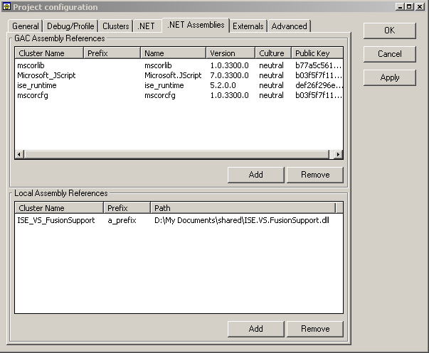
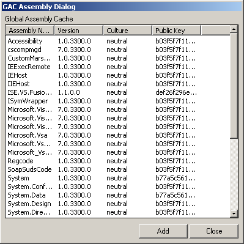
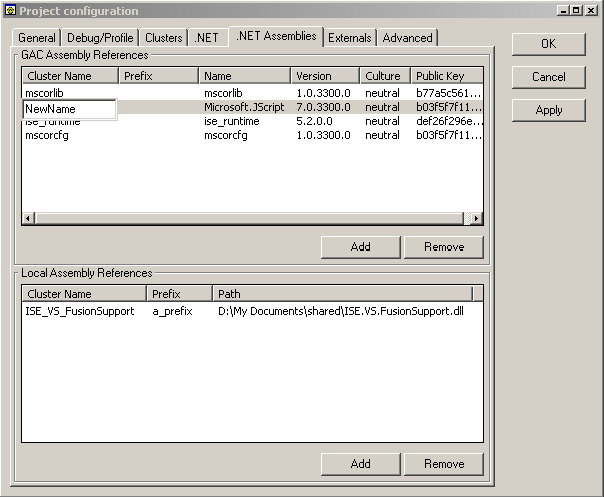

This tab is only available when you have the .NET generation enabled. Here is what you will see if you have .NET generation enabled.

In this list you can view all the assemblies which are part of your system and are also in the Global Assembly Cache (GAC). Name, version, culture and public key information about the assemblies are provided, as well as the Eiffel specific information detailing the cluster name and/or class prefix text associated with the assembly.
In this list you can view all the local assemblies which are part of your system. Cluster name, class prefix text, and the assembly full path is provided.
To reference a GAC assembly in your .NET application click the 'Add' button underneath the GAC Assembly Reference list. This will present you with a dialog containing a full list of GAC assemblies on your system. To add an assembly just double-click on it, or click on the 'Add' button. When you are done, click 'Close'.

To edit the name of the Eiffel cluster or prefix text associated with a particular assembly simply double-click on the existing text (or where the text would be if it is empty). A text box will appear allowing you to edit the assembly name. Here is an example of editing a cluster name for an assembly.
